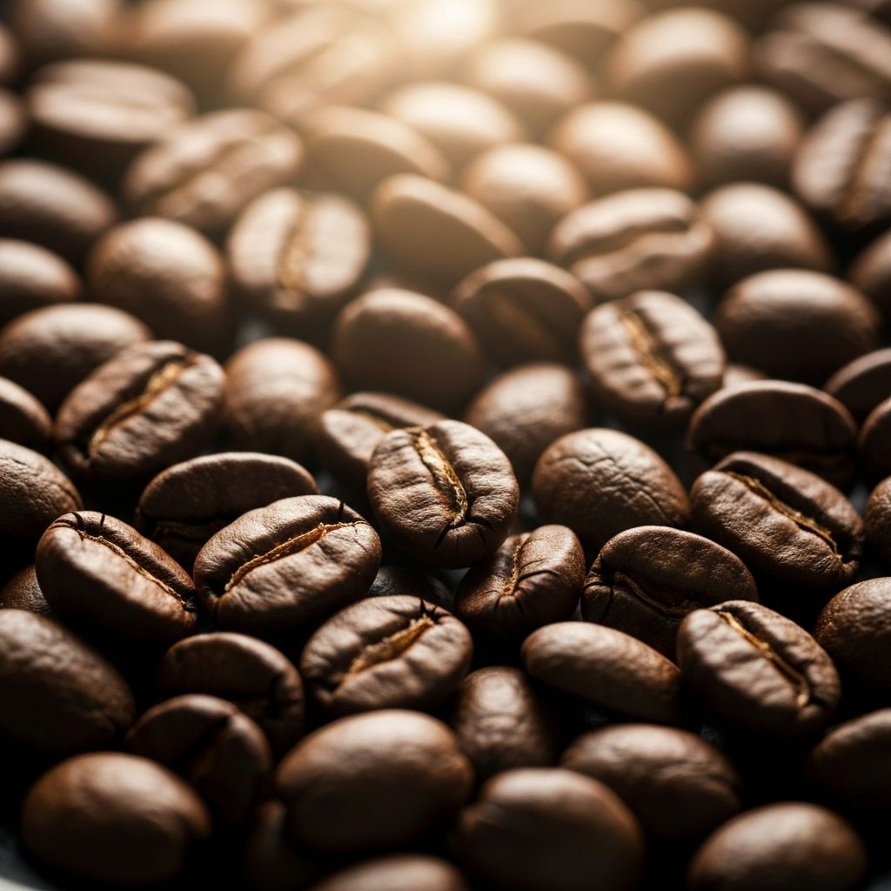

Coffee Guide
The Art of Coffee Tasting: A Beginner's Guide
Discover the nuances of coffee tasting and learn how to identify different flavor notes in your favorite brews. From fruity undertones to chocolatey finishes, unlock a new appreciation for your daily cup.
Coffee tasting, or cupping, is both an art and a science. Professional tasters can identify dozens of distinct flavors, but anyone can learn to appreciate the complexity of a well-crafted coffee. Start by noting the aroma, then the body and acidity, and finally the flavor notes that linger on your palate.